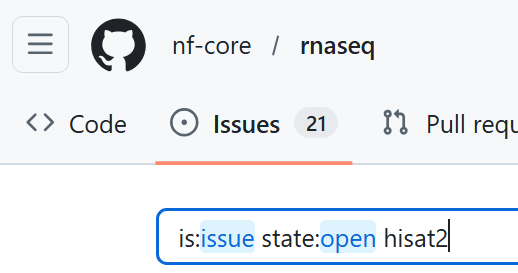
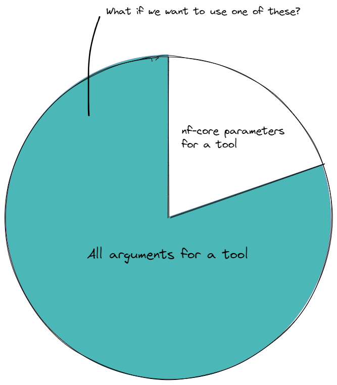
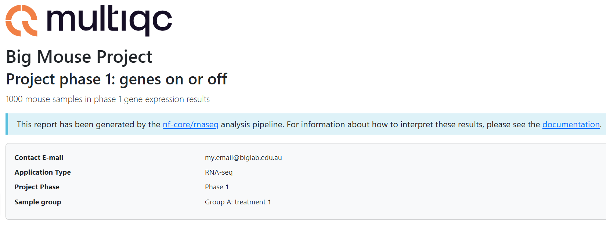
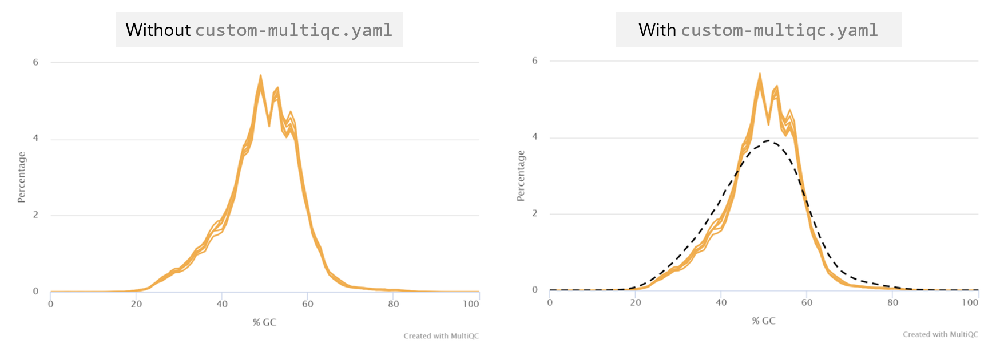

2.3 Case study: customisation in action
Objectives
- Execute a non-default analysis with an nf-core pipeline
- Troubleshoot pipeline execution failure
- Use custom configuration files to resolve the failure
- Add additional custom configuration files to augment run output
2.3.1 Case study introduction
This section will take a more playful approach to customisation. No new nf-core or Nextflow concepts will be introduced. Instead, we will apply a number of the customisation strategies we have learnt over the last two days to a theoretical real-world customisation scenario.
We will cover a typical journey experienced when you choose to perform a non-standard analysis, including debugging the dreaded error message, searching for the issue solution, and working out how to make the solution work for you.
We will apply strategic thinking and methodology to:
- Identify and apply changes to the workflow that best suit our experiment goals using pipeline parameters
- Apply the parameters to the run and investigate an error message
- Use multiple custom configurations to resolve the issue
- Customise resource tracing and QC files for tailored analysis reporting
🐭 The scenario
Our busy lab is in the throes of a research project that prioritises quick answers about which genes are expressed in the study animals. Transcript-level expression is not of interest - simply 'gene ON' or 'gene OFF' answers, ideally yesterday!
The project lead is concerned about the time it will take to run the rnaseq workflow over all 1,000 study animals. We can't use HPC as the data is highly protected, so we have been tasked with finding a faster pipeline to identify expressed genes in the samples using our small internal server.
Warning
nf-core pipelines are extensively tested, yet with so many tool options and pipeline parameters it would be impractical for every possible combination of workflow choices to be tested. This means that a customised run may at times encounter an error.
Instead of dissuading you from customising a non-standard run, this exercise will teach some practical steps to finding an issue solution and applying it using the customisation skills we have covered in the workshop.
While the particular issue is likely to be transient and no longer required in updated nf-core/rnaseq versions, the included troubleshooting and customisation steps can be applied to other issues you may encounter when customising nf-core runs.
2.3.2 Devising and running a non-default analysis
Knowing that the main pipeline bottleneck is the STAR_ALIGN process, we decide to review what other aligner choices the workflow provides.
After visiting the nf-core/rnaseq user guide we can see from the metro map that Hisat2 and Bowtie2 can be used instead of STAR:

Bowtie2 uses Salmon quantification like the default STAR-Salmon pipeline we have been running, but Hisat2 does not have this option. However, we spot the tool featureCounts listed under pipeline stage 5, 'Quality control & reporting'. Having used featureCounts before, we know that it performs a fast count of reads mapped to genes. It doesn't provide transcript-level counts like Salmon, but that is not needed for this part of the project. Comparison studies between Hisat2 and STAR align report that Hisat2 requires much less RAM than STAR, meaning we could get more samples aligning at the same time, diminishing the impact of the alignment bottleneck on our throughput.
Exercise 2.3.2  3 mins
3 mins
- Using the nf-core/rnaseq parameters guide, find the parameter needed to use the Hisat2 aligner
- Add the new parameter to
run_rnaseq.sh - Update the
--outdirvalue to lesson-2.3 - Save the script, and resubmit with the command
bash run_rnaseq.sh
Solution
The parameter needed to use the Hisat2 aligner is:
#!/bin/bash
# parameters
samplesheet=/home/<USERNAME>/data/samplesheet.csv
output_directory=lesson-2.3
ref_fasta=/home/<USERNAME>/data/mm10_reference/mm10_chr18.fa
ref_gtf=/home/<USERNAME>/data/mm10_reference/mm10_chr18.gtf
star_index=/home/<USERNAME>/data/mm10_reference/STAR
salmon_index=/home/<USERNAME>/data/mm10_reference/salmon-index
# configurations
profile=workshop
config=workshop.config
nextflow run rnaseq/main.nf \
--input ${samplesheet} \
--outdir ${output_directory} \
--fasta ${ref_fasta} \
--gtf ${ref_gtf} \
--star_index ${star_index} \
--salmon_index ${salmon_index} \
--skip_markduplicates true \
--save_trimmed true \
--save_unaligned true \
--aligner hisat2 \
-profile ${profile} \
-c ${config} \
-resume
Poll 2.3.2
Did your run complete, or fail?
If it failed, what was the error printed to the terminal window?
2.3.3 Troubleshooting a pipeline error
The error doesn't give much to go by, apart from that it is something to do with /tmp. The samtools error doesn't add further meaning as it just indicates the piped command received no output.
A quick ls -l shows that we can read and write the VM /tmp directory, so we decide to check the command that was executed by the failing process, HISAT2_ALIGN.
In Lesson 2.1.3 we learnt that the command executed by a process was saved within the .command.sh file in the process work directory. We learnt how to find the work directory using the nextflow log command.
In this case, we don't need to hunt for the directory as it has been helpfully printed out along with the error message.
Note: the work directory below is an example of terminal output, your work directory path will be different
Exercise 2.3.3.1 2 mins
View the .command.sh file within the failed process work directory.
Do you detect any obvious issues with the command?
Solution
The command has received our sample reads and input genome files OK. No clues here!
INDEX=`find -L ./ -name "*.1.ht2*" | sed 's/\.1.ht2.*$//'`
hisat2 \
-x $INDEX \
-U SRR3473988_trimmed_trimmed.fq.gz \
\
--known-splicesite-infile mm10_chr18.filtered.splice_sites.txt \
--summary-file SRR3473988.hisat2.summary.log \
--threads 2 \
--rg-id SRR3473988 --rg SM:SRR3473988 \
--un-gz SRR3473988.unmapped.fastq.gz \
--met-stderr --new-summary --dta \
| samtools view -bS -F 4 -F 256 - > SRR3473988.bam
🌐 The logical next step is to check if this is a known error with Hisat2, or with the nf-core Hisat2 module.
Exercise 2.3.3.2 3 mins
- In a web browser, navigate to the nf-core/rnaseq github repository
- Select the 'Issues' tab, and search for issues matching the term 'hisat2'
- Also search for issues relating to tmp/temp directory errors in the Hisat2 github repository

Can you find any issues relating to the (ERR): mkfifo(/tmp/45.unp) error in either of these repositories?
Solution
The nf-core/rnaseq issues search was not revealing, however a Hisat2 issue titled Enabling a --temp-directory parameter #438 describes the exact error message some of use have encountered.
Reading through the issue activity, you can see that the issue has been linked by an nf-core issue titled update module: HISAT2/ALIGN #9487.
Following this link, we can see that nf-core have marked this issue as 'WIP' (work in progress). Seems like we have found a solution to our bug!
The importance of open-source and community contribution
By reporting issues and bugs we find in open-source code through github issues, we can effect real change. Developers are typically welcoming of bug reports that help improve their code and happy to help you to use their tool for your research. Other users of a tool may also chime in with their solutions, or you may want to add your helpful tips to an open issue!
2.3.4 Configuring the solution
Lucky for us, we don't need to puzzle out the solution, as it has already been described on the issue ticket. Excellent, since the Big Mouse Project timeline cannot wait for nf-core to complete their testing and merge the WIP into the rnaseq pipeline!
The ticket describes a new release of Hisat2 v 2.2.2 that includes a new parameter to prevent the /tmp error.
To use Hisat2 for a speedier analysis, we need to make two custom configurations to the nf-core/rnaseq pipeline:
- Use the new version of Hisat2
- Apply the new parameter to the Hisat2 process command
2.3.4.1 Applying a custom tool version
Recall from Lesson 2.1.6.2 that all tool versions are included within the MultiQC report as well as a yaml file in the pipeline_info folder.
Exercise 2.3.4.1.1 3 mins
Discover the version of Hisat2 used in our most recent run of nf-core/rnaseq.
We need Hisat2 version 2.2.2 for the new --temp-dir parameter. How should we apply this customisation to our our run?
Poll 2.3.4.1
For maintaining portability and reproducibility, what is the optimal method to apply our custom Hisat2 container to our pipeline run?
a) Within the nectar_vm.config institutional config file. It's already working well on our platform, so we can build on it for further customisations without issue.
b) Within a separate custom config file named custom-hisat2.config. We would then add it to any runs of nf-core/rnaseq that required this non-default workflow.
c) Within the Hisat2 module main.nf file. This way, we don't need to worry about adding another custom config when we execute the run command.
Answer
b) Within a separate custom config file named custom-hisat2.config.
By placing it within a clearly named custom config file, there is less chance of unwittingly executing a workflow that does not match the expected utilisation of tools. Making it a separate config also means it can be easily dropped from our run when nf-core finalises their testing of the issue marked as 'WIP' and includes the resolution within the next version of rnaseq.
Institutional configs are intended to be shareable with others using nf-core pipelines on the same infrastructure. Adding the custom tool over-ride to this file would prevent our institutional config from being portable to other analyses, so a) is incorrect.
In general, editing the process main.nf file is not recommended, as this impedes reproducibility. Swapping out tool versions is a bespoke adaptation of the nf-core workflow that would harm reproducibility if it was inadvertently executed, which is likely to happen if it is hidden within the source code, making c) incorrect.
To make the purpose of the config clear to anyone else in the lab who runs the pipeline, we will also include a descriptive comment explaining why the config is needed.
Comments in Nextflow
Commenting code is good practice to make the purpose and logic of the code easier for others and your future self to understand.
Comments in Nextflow use // for single line comments or /* .. */ to comment a block on multiple lines.
Exercise 2.3.4.1.2 5 mins
- Create a new file called
custom-hisat2.config - Add a Nextflow comment describing what the config does and why, including the links for the pertinent Hisat2 and nf-core issues
- Identify the fully qualified process name/process execution path for the
HISAT2_ALIGNprocess - Within a
processscope code block, provide the process name identified above to the appropriate process selector - Within the process selector code block, add the path to the Hisat2 v 2.2.2 container described in the nf-core issue:
container = 'https://community-cr-prod.seqera.io/docker/registry/v2/blobs/sha256/c3/c36472269e8898f63b7b65dd40433462d541f9e75f9401f0bf8488021275d006/data'
Hint: Process execution paths
You can obtain the process execution path from the execution trace, timeline or report files within <outdir>/pipeline_info.
Process names are not always unique in nf-core pipelines that may contain modules from other sources. Best practice for specificity is to use the fully qualified process name, which typically takes the form:
PIPELINE_NAME:WORKFLOW_NAME:SUBWORKFLOW_NAME:PROCESS_NAME
Hint: Process selectors
We learnt about process selectors in Lesson 2.2.5 and Lesson 2.2.6
Hint: Syntax help
Our nectar_vm.config files contain process scope and process selector code blocks. Our hisat2 config will be more simple, not requiring the profile or singularity scopes we have within our Nectar institutional config.
Solution
// Custom config to apply latest Hisat2 v 2.2.2 to nf-core/rnaseq v 3.23.0
// Required to add new Hisat2 --temp-directory parameter to resolve known issue
// Hisat2 issue: https://github.com/DaehwanKimLab/hisat2/issues/438
// nf-core issue: https://github.com/nf-core/modules/issues/9487
//
// This config should be dropped when running future nf-core/rnaseq versions that resolve the issue
process {
withName: "NFCORE_RNASEQ:RNASEQ:FASTQ_ALIGN_HISAT2:HISAT2_ALIGN" {
container = 'https://community-cr-prod.seqera.io/docker/registry/v2/blobs/sha256/c3/c36472269e8898f63b7b65dd40433462d541f9e75f9401f0bf8488021275d006/data'
}
}
Caveat
Note that for deploying nf-core workflows, it is not recommended to change the tool versions within the workflow, as this will decrease portability and reproducibilty! This exercise is to demonstrate how you can specify containers, as this may aid you in developing and testing your own Nextflow workflows or testing new tool versions. When a non-standard version of a tool is used for publishing nf-core pipeline results, this should be clearly stated within the methods section of the publication.
2.3.4.2 Adding a custom tool parameter
As we learnt in Lesson 1.3.6, nf-core modules define an ext.args process directive that can be used to add any tool parameter to a process command.
The utility of this directive is wide-reaching when you consider the number of optional parameters a typical bioinformatics tool may have. It is not feasible for nf-core to paramaterise all of these arguments...

Extra convenience has been added for some commonly-used tools by wrapping the ext.args directive within an nf-core pipeline parameter, typically named --extra_<tool>_args.
Exercise 2.3.4.2.1 2 mins
- Open the nf-core/rnaseq parameters online guide and check for any
--extra_<tool>_argsparameters - Can you find a pipeline parameter to add extra arguments to the Hisat2 tool?
Solution
There is no such parameter for Hisat2.
Included in version 3.23.0 of nf-core/rnaseq are:
--extra_trimgalore_args--extra_fastp_args--extra_star_align_args--extra_bowtie2_align_args--extra_salmon_quant_args--extra_kallisto_quant_args--extra_fqlint_args
Using ext.args in the absence of --extra_<tool>_args
The ext.args directive typically forms part of all nf-core module code. If you wish to customise a tool that does not have an --extra_<tool>_args pipeline parameter, you can still add custom parameters with a custom configuration file that passes your parameter to the target module via ext.args.
Let's see this tip in action!
Exercise 2.3.4.2.2 3 mins
- Using the procedure described in Exercise 2.2.2.3, view the
main.nffile for the HISAT2_ALIGN process:
The nf-core subworkflow named FASTQ_ALIGN_HISAT2 shows the module path for HISAT2_ALIGN as modules/nf-core/hisat2/align/main.nf.
Viewing this main.nf file, we can see a line of Nextflow code that defines a variable called args and assigns it the contents of ext.args. If ext.args is empty, the args variable remains empty:
26 script:
27 def args = task.ext.args ?: ''
Further down, within the hisat2 command that is executed by the process, we can see the $args variable added to the hisat2 command:
42 hisat2 \\
43 -x \$INDEX \\
44 -U $reads \\
45 $strandedness \\
46 $ss \\
47 --summary-file ${prefix}.hisat2.summary.log \\
48 --threads $task.cpus \\
49 $rg \\
50 $unaligned \\
51 $args \\
52 | samtools view -bS -F 4 -F 256 - > ${prefix}.bam
Now that we have verified that the extra parameter needed can be included in the tool process command, we can add it to our custom-hisat2.config file.
Our next run will include two custom configs. This is valid, and we can add as many configs as needed to customise our run. Some configurations make sense being grouped within a single config file, for example customising compute resources and software management within an institutional config. Others are best placed within distinct and explicitly named configs to ensure they are only applied when needed. As we learnt in Lesson 2.2.4.2, we can also leverage custom profiles to group configuratons that apply to a certain environment or analysis. Once we have tested and verified our Hisat2 customisation is working, we will incorporate it into our workshop custom profile.
Specifying multiple configs
When adding multiple custom configs at the nextflow run command, we can supply them to -c in a comma-delimited list, for example -c custom-1.config,custom-2.config.
Alternatively, we can include -c several times, for example -c custom-1.config -c custom-2.config.
Exercise 2.3.4.2.3 3 mins
- Provide
--temp-directory .to theext.argsdirective within the process selector code block ofcustom-hisat2-version.config - Update
run_rnaseq.shby addingcustom-hisat2.configto the Nextflow-cparameter, and ensure the Nextflow-resumeflag is applied - Change
--outdirtolesson-2.3.4 - Save both scripts, then resubmit your run with
bash run_rnaseq.sh
💡 When running tools with containers, the process is running inside the container, so the . path will evaluate to a location inside the container. This will ensure that the tmp directory used by each process will be unique, and avoid error-inducing clashes when multiple HISAT2_ALIGN processes attempt to write to the user's /tmp on the local machine.
Solution
// Custom config to apply latest Hisat2 v 2.2.2 to nf-core/rnaseq v 3.23.0
// Required to add new Hisat2 --temp-directory parameter to resolve known issue
// Hisat2 issue: https://github.com/DaehwanKimLab/hisat2/issues/438
// nf-core issue: https://github.com/nf-core/modules/issues/9487
//
// This config should be dropped when running future nf-core/rnaseq versions that resolve the issue
process {
withName: "NFCORE_RNASEQ:RNASEQ:FASTQ_ALIGN_HISAT2:HISAT2_ALIGN" {
container = 'https://community-cr-prod.seqera.io/docker/registry/v2/blobs/sha256/c3/c36472269e8898f63b7b65dd40433462d541f9e75f9401f0bf8488021275d006/data'
ext.args = '--temp-directory .'
}
}
#!/bin/bash
# parameters
samplesheet=/home/<USERNAME>/data/samplesheet.csv
output_directory=lesson-2.3
ref_fasta=/home/<USERNAME>/data/mm10_reference/mm10_chr18.fa
ref_gtf=/home/<USERNAME>/data/mm10_reference/mm10_chr18.gtf
star_index=/home/<USERNAME>/data/mm10_reference/STAR
salmon_index=/home/<USERNAME>/data/mm10_reference/salmon-index
# configurations
profile=workshop
config=workshop.config
hisat2=custom-hisat2.config
nextflow run rnaseq/main.nf \
--input ${samplesheet} \
--outdir ${output_directory} \
--fasta ${ref_fasta} \
--gtf ${ref_gtf} \
--star_index ${star_index} \
--salmon_index ${salmon_index} \
--skip_markduplicates true \
--save_trimmed true \
--save_unaligned true \
--aligner hisat2 \
-profile ${profile} \
-c ${config},${hisat2} \
-resume
🤞 Hopefully your run now completes without error!
Given that the error is intermittent (depends on number of Hisat2 processes running at the same time), we would like to verify at the code level that the fix has been applied to our test mice samples before we run it on the other 998...
Exercise 2.3.4.2.4 5 mins
- Check that the custom version 2.2.2 of hisat2 was run
- Check that the custom parameter
--temp-directory .was applied to the HISAT2_ALIGN process command
Hint: Tool versions
Recall from Lesson 2.1.6.2 that all tool versions are included within the MultiQC report as well as a yaml file in the pipeline_info folder.
Hint: Process .command.sh file
Finding the .command.sh for a process within the process work directory using nextflow log was practised in Exercise 2.1.3.
Solution
- Check that the custom version 2.2.2 of hisat2 was run:
HISAT2_ALIGN:
hisat2: 2.2.2
HISAT2_BUILD:
hisat2: 2.2.1
HISAT2_EXTRACTSPLICESITES:
hisat2: 2.2.1
A quick check shows us that yes HISAT2_ALIGN has used our custom version... but not the other Hisat modules - oops! 🗒️ We make a note to update our hisat2 config file to ensure all Hisat2 modules use the new version, as version consistency within data analysis is crucial for reproducibility and preventing version conflicts.
- Check that the custom parameter
--temp-directory .was applied to the HISAT2_ALIGN process command:
hisat2 \
-x $INDEX \
-U SRR3473989_trimmed_trimmed.fq.gz \
\
--known-splicesite-infile mm10_chr18.filtered.splice_sites.txt \
--summary-file SRR3473989.hisat2.summary.log \
--threads 2 \
--rg-id SRR3473989 --rg SM:SRR3473989 \
--un-gz SRR3473989.unmapped.fastq.gz \
--temp-directory . \
| samtools view -bS -F 4 -F 256 - > SRR3473989.bam
👍 HISAT2_ALIGN is using the custom version and custom parameter to resolve our issue.
2.3.5 Customising resource tracing
After running a few test mice through our customised workflow, we are impressed by the speed gains we have achieved, with most samples completing in less than half the time!
We want to create some figures showing speedup of the customised workflow to present at the next project meeting, but the default nf-core pipeline_info trace file does not contain all the fields we need. Fortunately, trace files can be customised to include any combination of available fields.
The rnaseq/nextflow.config file enables the trace option and sets a unqiue filename using date and timestamp:
140 trace_report_suffix = new java.util.Date().format( 'yyyy-MM-dd_HH-mm-ss')
362 trace {
363 enabled = true
364 file = "${params.outdir}/pipeline_info/execution_trace_${params.trace_report_suffix}.txt"
365 }
Note that the trace.fields option is absent, meaning nf-core is using the default fields for Nextflow trace. To discover the default fields when trace is enabled, view the fields included in the example trace file, or the pipeline_info/execution_trace_<date>_<time>.txt from one of your completed runs from this session.
There is no trace option that allows adding fields to the default, but we can over-ride the default fields with our custom fields using the trace.fields option within a custom configuration file.
Nextflow log fields vs trace fields
Recall the nextflow log -l command introduced in Lesson 1.2.5.
The fields printed by nextflow log -l and their meanings are identical to the fields available to trace.fields with an important exception. Since the % symbol is a special character, %cpu and %mem as described for Nextflow trace correspond to pcpu and pmem for the nextflow log -f command-line utility.
Exercise 2.3.5.1 5 mins
We would like to create figures that compare resource and time savings between the default STAR-Salmon run and our customised Hisat2 run for the test samples.
To do this we will need per-process metrics on walltime, CPUs requested and percentage used, memory requested and percentage used.
- View the available trace fields and identify which fields we need to produce these plots
- Check which fields are included in the default trace file and identify any from our list that are not included
- Create a new custom configuration file called
custom-trace.config, add a descriptive comment, and add atracescope code block - Within the
tracescope, provide a comma-separated list of fields to include to thefieldsoption of trace- You can choose whether to list all default fields plus our custom fields, or a shorter list including just the fields we want to plot
- If you choose a shorter list of fields, include the
namefield to identify which processes the resource metrics apply to - Your list should be enclosed in quotes, eg
fields = 'field1,field2'
Solution
The fields we need for our resource plots are:
- `cpus`
- `%cpu`
- `memory`
- `%mem`
- `realtime`
Of these, the following are included in the nf-core/rnaseq trace file by default:
- `%cpu`
- `realtime`
The custom fields we need to add are:
- `cpus`
- `memory`
- `%mem`
The next step is to add the new config to our run. The -c config list is growing rather long:
Each config is a discrete set of customisations matching a specific purpose - they are modular and portable - yet each of them are required for the specific application of running this non-standard run on these VMs. It makes sense then to logically group these configs under our workshop profile.
Exercise 2.3.5.2 8 mins
- Open
workshop.config - Under the
workshopprofile, addcustom-trace.configusing theincludeConfigoption - Now we have tested and verified the new Hisat2 pipeline and issue-solving config, it makes sense to group it under the profile
- Add
custom-hisat2.configto theworkshopprofile using theincludeConfigoption - Update
run_rnaseq.shby removingcustom-hisat2.configfrom the Nextflow-cparameter
- Add
- Within
run_rnaseq.sh, change--outdirtolesson-2.3.5 - Save both scripts, then resubmit your run with
bash run_rnaseq.sh
Solution
profiles {
workshop {
includeConfig 'nectar_vm.config'
includeConfig 'custom-hisat2.config'
includeConfig 'custom-trace.config'
}
}
#!/bin/bash
# parameters
samplesheet=/home/<USERNAME>/data/samplesheet.csv
output_directory=lesson-2.3.5
ref_fasta=/home/<USERNAME>/data/mm10_reference/mm10_chr18.fa
ref_gtf=/home/<USERNAME>/data/mm10_reference/mm10_chr18.gtf
star_index=/home/<USERNAME>/data/mm10_reference/STAR
salmon_index=/home/<USERNAME>/data/mm10_reference/salmon-index
# configurations
profile=workshop
config=workshop.config
nextflow run rnaseq/main.nf \
--input ${samplesheet} \
--outdir ${output_directory} \
--fasta ${ref_fasta} \
--gtf ${ref_gtf} \
--star_index ${star_index} \
--salmon_index ${salmon_index} \
--skip_markduplicates true \
--save_trimmed true \
--save_unaligned true \
-profile ${profile} \
-c ${config} \
-resume
Does the new resource trace file meet our plotting needs?
Exercise 2.3.5.3 1 min
- Open the file
lesson-2.3.5/pipeline_info/execution_trace_<date>_<time>.txtby double clicking it in the VS Code explorer pane - Check that the custom fields you have specified have been applied
Tracing cached processes
For processes with status CACHED, the resources reported in the trace file (as well as other pipeline_info files) are from the actual compute required to execute the process, and not the time this execution took to restore the data from cache. Keeping all the usage details together whether or not tasks were cached simplifies reviewing and reporting compute usage.
Warning
When you submit a run with custom configuration files, these will be printed in the launch log as your run starts, as well as documented in the Nextflow command section of the Nextflow workflow report.
Configuration files that are included within a profile are not lsited in this way, only the profile itself is listed.
This makes it crucial that you save your custom configuration files along with with pipeline outputs to ensure reproducibility and portability of your custom analysis.
2.3.6 Personalise MultiQC reports
To polish up our presentation for the Big Mouse Project meeting, we want to add some custom detail to the MultiQC report.
Many nf-core pipelines use MultiQC to aggregate results and statistics output by various bioinformatics tools, helping to summarise experiments containing multiple samples and multiple analysis steps. Recall that we used the MultiQC report to debug the strandedness error in Lesson 2.1.4.
MultiQC reports can be customised on the MultiQC command line or within a yaml-formatted MultiQC configuration file. nf-core has enabled this functionality with the --multiqc_config parameter, which takes a the yaml-formatted MultiQC configuration file and applies all included MultiQC parameters to the MultiQC process command.
Hidden nf-core parameters
The --multiqc_config parameter is a hidden parameter! To see this parameter, you need to apply --showHidden on the command line help, or select 'Show hidden' on the lower right hand side of the nf-core parameters webpage.
We will create a custom MultiQC config to:
- Add a custom report header and title
- Overlay a theoretical GC content track specific for our mouse reference genome
Exercise 2.3.6.1 3 mins
- Create a new file named
custom-multiqc.yaml - Under the
report_header_infoconfig option, add a custom report header- You can add any details you choose under
report_header_info, as long as they conform to the yaml key:value pairs format
- You can add any details you choose under
- Under the
fastqc_configoption, specifyfastqc_theoretical_gcas the yaml key andmm10_txome(mouse transcriptome) as the yaml value - Give your MultiQC report file a descriptive filename using the
filenameconfig option - Add some titles and introductory text if desired
- Save the file
Solution
title: "Big Mouse Project"
filename: Big_Mouse_Project_phase1_groupA_rnaseq_QCreport.html
subtitle: "Project phase 1: genes on or off"
intro_text: "1000 mouse samples in phase 1 gene expression results"
report_header_info:
- Contact E-mail: "my.email@biglab.edu.au"
- Application Type: "RNA-seq"
- Project Phase: "Phase 1"
- Sample group: "Group A: treated"
fastqc_config:
fastqc_theoretical_gc: "mm10_txome"
You may be expecting to add this configuration file at the Nextflow -c parameter in your run command. In this case, we do not add the configuration at -c!
This configuration is a yaml-formatted file matching the input format expected by the tool MultiQC, and not a Nextflow configuration file. nf-core/rnaseq includes the pipeline parameter --multiqc_config so we can add this particular configuration as we would any other pipeline parameter.
Exercise 2.3.6.2 3 mins
- Add the MultiQC yaml file to your run command in
run_rnaseq.sh - Update the
--outdirto lesson-2.3.6 - Save your run script and re-submit your run
Solution
#!/bin/bash
# parameters
samplesheet=/home/<USERNAME>/data/samplesheet.csv
output_directory=lesson-2.3.6
ref_fasta=/home/<USERNAME>/data/mm10_reference/mm10_chr18.fa
ref_gtf=/home/<USERNAME>/data/mm10_reference/mm10_chr18.gtf
star_index=/home/<USERNAME>/data/mm10_reference/STAR
salmon_index=/home/<USERNAME>/data/mm10_reference/salmon-index
# custom multiqc
multiqc=custom-multiqc.yaml
# configurations
profile=workshop
config=workshop.config
nextflow run rnaseq/main.nf \
--input ${samplesheet} \
--outdir ${output_directory} \
--fasta ${ref_fasta} \
--gtf ${ref_gtf} \
--star_index ${star_index} \
--salmon_index ${salmon_index} \
--skip_markduplicates true \
--save_trimmed true \
--save_unaligned true \
--multiqc_config ${multiqc} \
-profile ${profile} \
-c ${config} \
-resume
Does the MultiQC report have the intended customisations?
Exercise 2.3.6.3 3 mins
- Once your run has completed, right-click on
lesson-2.3.6/multiqc/hisat2/<custom-title>.htmland select 'Open with Live Server'- Notice your customisations in the header section of the report, for example:

- Navigate to the section titled FastQC: Per Sequence GC Content and check that the custom track has been successfully added

 The custom GC track supports that our sample transcriptomes follow a normal distribution consistent with the mm10 reference.
The custom GC track supports that our sample transcriptomes follow a normal distribution consistent with the mm10 reference.
💃🏽🕺🏻 The Big Mouse Project meeting is a success and the project lead is thrilled with our time savings and the professionalism in the way we presented our results!
2.3.7 Workshop key points
Key points from Session 1 and Session 2
- nf-core is a curated set of analysis workflows built using the workflow language Nextflow
- There are active community platforms you can join for nf-core and Nextflow to ask questions and stay up to date with the latest activities and announcements
- Understanding how to customise nf-core workflows through pipeline parameters and configuration files enables you to adapt nf-core pipelines to real-world analysis situations
- Understanding the priority order in which configuration and pipeline parameters and configuration files are applied helps you ensure your runs receive the instructions intended
- Understanding Nextflow configuration and execution can help you troubleshoot a run
- Customisations to what is run are controlled by nf-core pipeline parameters as well as configurations targeting specific processes using the
processscope and process selectors - Custom tool parameters that are not covered by an nf-core pipeline parameter can be applied to a run using
ext.argswithin theprocessscope - Customisations to how the run executes on your machine are controlled by custom configuration files
- Customised resource tracing is enabled within custom configuration files using the
tracescope - Multiple configurations can be applied to a run using
-cand/or customprofiles - Appropriate custom config use provides modularity, portability and reproducibility to nf-core workflows
- All configs and run scripts should be backed up alongside pipeline results
 nf-core pipelines have comprehensive documentation describing usage, parameters, outputs, and interpreting results. Always consult the docs before running and customising a pipeline!
nf-core pipelines have comprehensive documentation describing usage, parameters, outputs, and interpreting results. Always consult the docs before running and customising a pipeline!